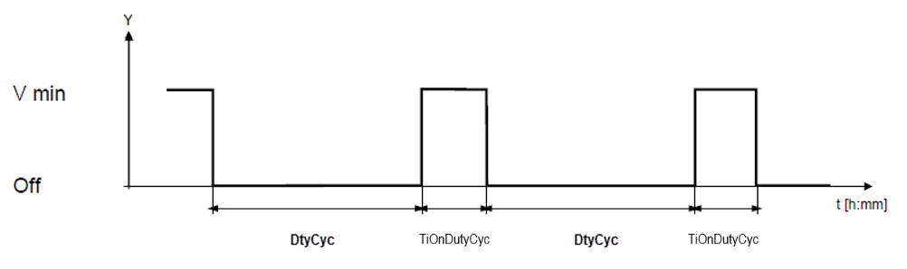

Fan coil unit ventilation control (FcuVntCtl11)
Overview
The application function "Fan coil unit ventilation control 11" (FcuVntCtl11) collaborates with FCU fans for ventilation and/or room air quality control.
Function
Different modes are available for ventilation control; the behavior is selectable by parameter.
Ventilation mode
The ventilation mode can be set per room operating mode to:
- Off
- Minimum (Minimum outside air damper position)
- Dcv (Demand controlled ventilation) 1)
- Dcv & Min (Demand controlled ventilation with a minimum outside air damper position limit) 1)
1) Air quality sensor required in the room.
The table shows factory default settings for min vent and air quality parameters:
Plant mode | Ventilation mode | Sp air quality | Outside air damper min position [%] |
|---|---|---|---|
1 Off | Off |
|
|
2 Protection* | Off | 1500 | 20 |
3 Economy* | Off | 1500 | 30 |
4 Pre-Comfort* | Dcv | 1100 | 40 |
5 Comfort* | Min & Dcv | 900 | 50 |
6 Warm-up | Off |
|
|
7 Cool down | Off |
|
|
8 Room low temperature protection (frost) | Off |
|
|
9 Condensate overflow | Off |
|
|
10 Free cooling | Depends on ROpMod | Depends on ROpMod | Depends on ROpMod |
11 Night cooling | Off |
|
|
12 Ventilation | s/a Comfort | s/a Comfort | s/a Comfort |
13 Equipment temperature protection | Off |
|
|
14 Emergency off | Off |
|
|
Not used |
|
|
|
Not used |
|
|
|
Not used |
|
|
|
*For these modes the parameters can be individually adjusted.
Periodic fan kick
Parameters are available to configure periodic cycling of the fan on and off. The fan can be enabled to run at the lowest speed at regular intervals, for the length of time in TiOnDutyCyc. See figure.

The length of the duty cycle off interval can be configured for each operating mode (DutyCycCmf, DutyCycPcf, DutyCycEco, DutyCycPrt). A duty cycle of 0min (default) means the feature is disabled.
Note
If the room temperature is measured with an extract air temperature sensor, the fan must be switched on to ensure the effective room temperature is measured correctly. In this case, periodic fan kick can be used to periodically cycle the fan.
Exception handling
For air quality control, the ventilation mode must be set to Dcv or Min & Dcv, FanAvlVent must be Yes and the air quality sensor must be Valid. If the sensor is failed or absent, then the ventilation mode cannot be Dcv or Min & Dcv; in this case FanVntReq is set to Min.
Configuration
 Objects
Objects
Description | Object | Type | Default value |
|---|---|---|---|
Setpoint room air quality for comfort | SpAQualRCmf | ACnfVal | 900 [ppm] |
Setpoint room air quality for pre-comfort | SpAQualRPcf | ACnfVal | 1100 [ppm] |
Setpoint room air quality for economy | SpAQualREco | ACnfVal | 1500 [ppm] |
Setpoint room air quality for protection | SpAQualRPrt | ACnfVal | 1500 [ppm] |
 Parameters
Parameters
Description | Parameter | Default value |
|---|---|---|
Comfort configuration 1:Off | CmfCnf | 4:Minimum ventilation & Demand-controlled ventilation |
Pre-Comfort configuration Enumeration see CmfCnf | PcfCnf | 3:Demand-controled ventilation |
Economy configuration Enumeration see CmfCnf | EcoCnf | 2:Minimum ventilation |
Protection configuration Enumeration see CmfCnf | PrtCnf | 2:Minimum ventilation |
Minimum position outside air damper for comfort | DmpOaPosMinCmf | 50 [%] |
Minimum position outside air damper for pre-comfort | DmpOaPosMinPcf | 40 [%] |
Minimum position outside air damper for economy | DmpOaPosMinEco | 30 [%] |
Minimum position outside air damper for protection | DmpOaPosMinPrt | 20 [%] |
Duty cycling in comfort | DutyCycCmf | 0 [min] |
Duty cycling in pre-comfort | DutyCycPcf | 0 [min] |
Duty cycling in economy | DutyCycEco | 0 [min] |
Duty cycling in protection | DutyCycPrt | 0 [min] |
Switch-on time duty cycling | TiOnDutyCyc | 6 [min] |
Interface
Interface | Description | Type | Ref. | Owned by |
|---|---|---|---|---|
PrSpVnt | Present ventilation setpoint | APrcVal | ● | - |
DmpOaVntCtr | Ventilation controller for outside air damper | Controller | ● | - |
FanVntCtr | Ventilation controller for fan | Controller | ● | - |
RCtl | Room control | GrpMaster | ◉ | Room |
SpAQualRCmf | Setpoint room air quality for comfort | ACnfVal | ● | - |
SpAQualRPcf | Setpoint room air quality for pre-comfort | ACnfVal | ● | - |
SpAQualREco | Setpoint room air quality for economy | ACnfVal | ● | - |
SpAQualRPrt | Setpoint room air quality for protection | ACnfVal | ● | - |
Engineering and commissioning